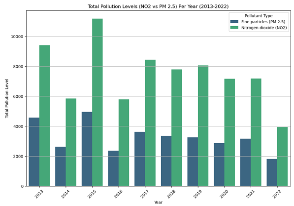

Through this article we have presented an analysis of correlation between traffic congestion and air quality in the city of New York

The visualizations provided include a bar graph representing pollution levels for nitrogen dioxide (NO2) and fine particulate matter (PM 2.5) from 2013 to 2022, along with a traffic heatmap of New York City displaying traffic volumes for selected years with corresponding total traffic volume summaries. Same year and area has been selected across the two different data sets. Notably, data for the years 2020 and 2021 are missing from the traffic dataset, likely due to disruptions caused by the COVID-19 pandemic.
Location map
Additionally, a location map is provided as a reference to visualize where the data from the two datasets-pollution and traffic-have been captured across New York City. Click the pins to see the exact location.
Integration
When correlating these two different data sets - traffic volume and pollution levels - a clear trend is elusive. This is partly due to the non-uniform nature of data collection between the datasets. For example, while 2022 shows the highest traffic volumes recorded in areas like Brooklyn and the Bronx, it paradoxically registers the lowest pollution levels in those same areas according to the pollution data set.
This discrepancy could arise from differences in the granularity and scope of data captured in each set. While traffic data might focus intensely on specific locations or junctions, pollution data could be influenced by a wider array of factors including but not limited to prevailing wind patterns, temporary local reductions in other non-traffic pollution sources, or improvements in vehicle emissions standards over time. Click on the heat map at the upper right layer-icon to filter the specific year
Explaining the visuals and our story
The bar graph is an essential tool for illustrating the temporal changes in pollution levels within the city. By presenting data annually, the graph allows for an easy comparison of pollution trends across a decade, highlighting any significant increases or decreases in pollutant concentrations. This format is particularly suitable for revealing the effectiveness of environmental policies or the impact of external events on air quality.
In parallel, the traffic heatmap provides a spatial analysis of vehicular congestion, and pinpointing areas with the highest traffic densities. The inclusion of total traffic volumes in the filter is a quantitative element to the visual representation, enabling a more nuanced understanding of traffic patterns. This heatmap is crucial for correlating areas of high traffic concentration with pollution data, providing insights into the localized impacts of road traffic on air quality.
Together, these visualizations effectively narrate the relationship between traffic and pollution in New York City. They are well-suited to the story being told as they allow for both a temporal and spatial analysis of complex environmental data. This dual approach not only aids in identifying problem areas, shown in the heat map, but also assists in assessing the progress made towards cleaner urban environments, shown in the bar chart.